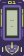
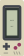
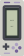
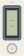

In the current assembly
Talavera
#F1E6CA#244E91#C36443#244E91The approved designs stay. One new Evangelion direction uses the purple and lime palette you liked in M1.

Unit-01-inspired helmet with one long central horn, angular eyes and jaw armor. Flat shoulder markings flank a uniform screen bezel. The 01 identifier and all four HEX colors are part of the exact geometry.
#382D55#7561A7#C7DD58#F0DEBB24 × 56 mm. Solid colors. Flush inlays. This artwork is a proposal; approval comes before installation in the keyboard.
Talavera, Game Boy, SNES, Phone, iPod and Hanafuda retain their exact paths and palettes. All six Mecha and Kumiko candidates from R7 were rejected and are excluded from this selection.
#F1E6CA#244E91#C36443#244E91
#DCD6BA#42454D#973C60#A6A392
#D1D0C9#464751#746198#ACA0C2#263C55#B8BBB5#87AD67#455469
#F0EEE5#656F79#AFB4B1#D8D9D2#F1E7D2#252B2E#D84932#456348The drawing and the native review use the same millimetre paths and HEX colors. The frame face stays at Z13.59 mm, with a uniform 2.40 mm screen bezel and the current 13.90 × 30.50 mm opening.
The design targets a 0.4 mm nozzle and 0.2 mm layers. Features, bonding and physical fit still need slicing and a sample print. No decoration rises above the frame face. The LCD content in the flat preview is illustrative.
Original fan-art interpretation of Evangelion Unit-01. The M1 palette is preserved exactly; no commercial image or logo was traced.
This page records artwork selection. Hanafuda still awaits production integration. The main keyboard assembly and explorer remain unchanged in this proposal round.
Master SHA256: 291e9fb40634246b8a4f0733fed7e240ec94295adab2540a9e5445ea9057555e